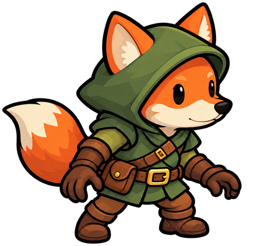
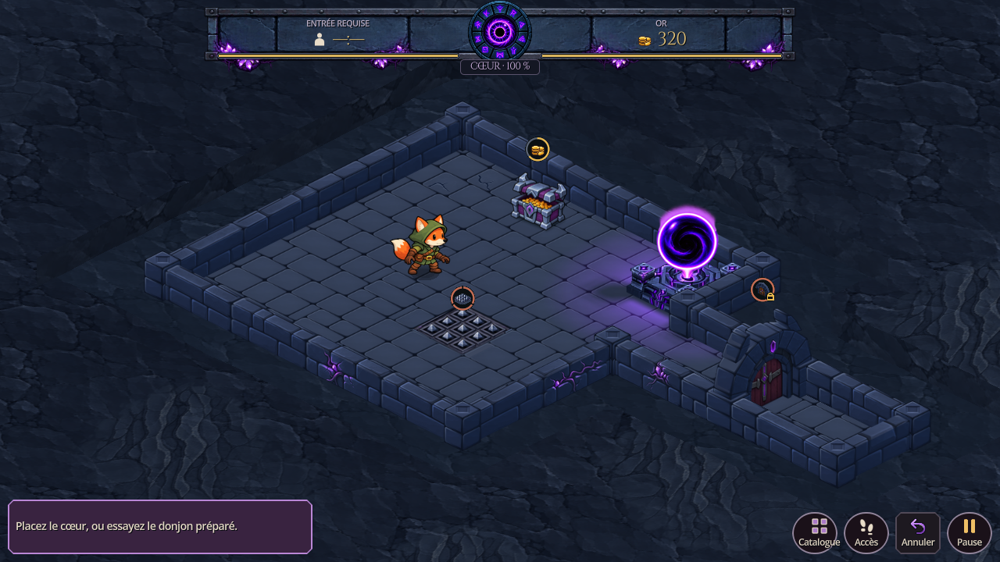
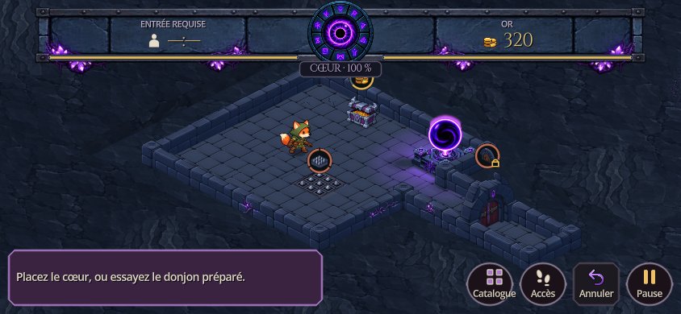
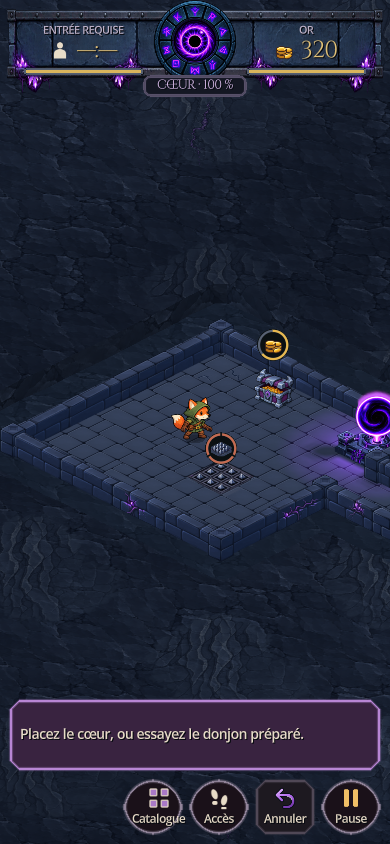

Vulpin — mains libres
Le voleur conserve sa capuche olive, sa sacoche et sa silhouette compacte. Ses deux mains sont vides et sa posture exprime l’exploration. Les dagues de la référence historique ont été retirées à la demande du joueur.

Proposition statique corrigée — pas encore intégrée au personnage jouable.
À l’échelle du donjon
Captures du moteur Godot dans une scène de présentation isolée, avec la caméra et le tri de profondeur du jeu. Le point de contact des bottes est estimé visuellement ; il reste à stabiliser sur chaque pose d’animation.

Paysage 1280 × 720.

Paysage 844 × 390.
Portrait 390 × 844.Marche et course : proposition de production
Préparer quatre orientations, correspondant aux quatre déplacements sur la grille. Pour chacune, créer un cycle de marche et un cycle de course distincts de six à huit images : bras libres, foulée plus ample en course et queue en contrepoids. Commencer par une seule boucle dans une direction pour vérifier la continuité du dessin.
Dans Godot, les images pourront être regroupées dans un atlas et jouées avec AnimatedSprite2D. Le pied d’appui, l’échelle et les proportions devront rester cohérents entre les images. La phase du cycle suivra la distance parcourue ; les arrêts, la pause et la vitesse ×2 suivront l’horloge du jeu. Documentation Godot.
Actuellement, exploration et fuite utilisent la même vitesse de déplacement. Une course réellement plus rapide serait un changement de règle distinct. Aucun cycle animé ni changement de comportement n’a été ajouté à ce stade.
Fichiers et vérification
Sprite 128 × 128 · Image originale · Prompt ImageGen · Préparation · Captures natives.
Génération avec l’outil ImageGen intégré ; transparence native conservée, recadrage et réduction uniforme uniquement. PNG préparé : 20 582 octets, 64 Kio en RGBA. Les trois captures ont été inspectées ; exécution terminée avec code 0 et sans erreur. Aucun fichier de sauvegarde, sprite de production, APK, commit ou push créé.